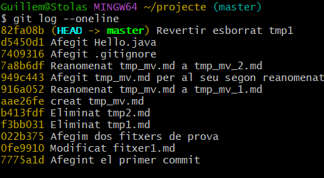

Benvinguts a la meva documentació
Activitat - Documentació de passos Github
Introducció
En aquesta activitat, seguirem els passos proporcionats per completar la tasca i documentar tot el procés en format Markdown. Es tracta d'un conjunt d'instruccions per utilitzar Git i altres feines relacionades.
Pas 1: Iniciar el repositori
- Acció: Crear un repositori nou a GitHub.
- Com fer-ho:
- Accedeix a GitHub.
- Fes clic a "New Repository" i completa les dades.
- Resultat Esperat: El repositori hauria de haverse creat correctament.
Pas 2: Clonar el repositori localment
- Acció: Clonar el repositori que acabem de crear al nostre ordinador.
- Com fer-ho:
- Obre la terminal.
- Executa el comando:
bash git clone https://github.com/usuari/repositori.git - Resultat Esperat: El repositori hauria de ser clònicament baixat al teu directori local.
Pas 3: Realitzar canvis al repositori
- Acció: Afegir un fitxer nou o editar un fitxer existent.
- Com fer-ho:
- Afegeix un nou fitxer o edita un existent.
- Guarda els canvis.
- Resultat Esperat: Els canvis s'han de realitzar correctament al repositori local.
Pas 4: Commit i Push dels canvis
- Acció: Realitzar un commit dels canvis i pujar-los al repositori remot.
- Com fer-ho:
- Executa les següents comandes:
bash git add . git commit -m "Missatge del commit" git push origin main - Resultat Esperat: Els canvis s'han de reflectir al repositori remot a GitHub.
Conclusió
En aquesta activitat, hem seguit els passos per utilitzar Git i GitHub per gestionar el nostre codi. Hem creat un repositori, clonarlo, realitzat canvis i pujat els canvis de manera efectiva.
Resultat de Git log i Git log --oneline
commit 82fa08ba264332910945faced82311bed0eeeibd (HEAD -> muster) guillemruano06@gmail.com>
Author: Alumne DAM guillemruano06@gmail.com Date: Tue Oct 29 09:39:53 2024 +0100
Revertir esborrat tapi
commit d5450d13cdf203fb7a4f9babfbe6f4f602365e0b
Author: Alumne DAM guillemruano06@gmail.com Date: Tue Oct 29 09:37:34 2024 +0100
Afegit Hello.java
commit 7409316692d26ae93bc1c4bedccf84b7ecc9a660 Author: Alumme DAN guillemruano06@gmail.com
Date: Tue Oct 29 09:20:34 2024 +0100
Afegit .gitignore
commit 7a8b6df83430bc60b4b1d060ad4b9fae4075657a Alumne DABM guillemruano06@gmail.com
Author: Date: Tue Oct 29 09:17:40 2024 +0100
Reanomenat tmp_mv.md a tmp_mv_2.md
....skipping...
commit 82fa08ba264332910945faced82311bed0eee1bd (HEAD -> master) Author: Alumne DAM guillemruano06@gmail.com
Date: Tue Oct 29 09:39:53 2024 +0100
Revertir esborrat tmpl
commit d5450d13cdf203fb7a4f9babfbe6f4f602365e0b Author: Alumne DAM guillemruano06@gmail.com
Date: Tue Oct 29 09:37:34 2024 +0100
Afegit Hello.java
commit 7409316692d26ae93bc1c4bedccf84b7ecc9a660
Author: Alumne DAM guillemruano06@gmail.com Date: Tue Oct 29 09:20:34 2024 +0100
Afegit .gitignore
commit 7a8b6df83430bc60b4b1d060ad4b9fae4075657a
Author: Alumne DAM quillemruano06@gmail.com Date: Tue Oct 29 09:17:40 2024 +0100
Reanomenat tmp_mv.md a tmp_mv_2.md
commit 949c443a5dae7f18ca5e5ead38c5659f7c14e301
Author: Alumne DAM quillemruano06@gmail.com Tue Oct 29 09:17:15 2024 +0100 Date:
Afegit top ev.nd per al seu segon reanomenat
commit 916a0521480702580ef3bdafbb31775797ched41
Author: Alumne DAM quillenruano06@gmail.com
Date: Tue Oct 29 09:16:47 2024 +0100
Reanomenat tmp_mv.md a tmp_mv_1.md
commit aae26fefaa6fce8a905e6a707404201f682320d5
Author: Alumne DAM guillemruano06@gmail.com Date: Tue Oct 29 09:15:42 2024 +0100
creat tmp_mv.md
commit b413fdfaffe6d617d2fec32243a935b985fc5404
Author: Alumne DAM guillemruano06@gmail.com
Date: Tue Oct 29 09:15:11 2024 +0100
Eliminat tmp2.md
commit f3bb03155af2c417095b1edadc527454d27810ca : Alumne DAM guillemruano06@gmail.com
Author Date: Tue Oct 29 09:14:38 2024 +0100
Eliminat tmp1.md
commit 022b3754579066726f7bae5cd7a713da9da2410c
Author: Alumne DAM guillemruano06@gmail.com
Date: Tue Oct 29 09:13:20 2024 +0100
Afegim dos fitxers de prova
commit Ofe991085e47bf016246bd4b64d5a0ba447072ce Author: Alumne DAM guillemruano06@gmail.com
Date: Tue Oct 29 09:10:32 2024 +0100
Modificat fitxer1.md
commit 7775a1dbe80300a1541576fcba284ce754849617 Author: Alumne DAM guillemruano06@gmail.com
Date: Tue Oct 29 09:08:16 2024 +0100
Afegint el primer commit
